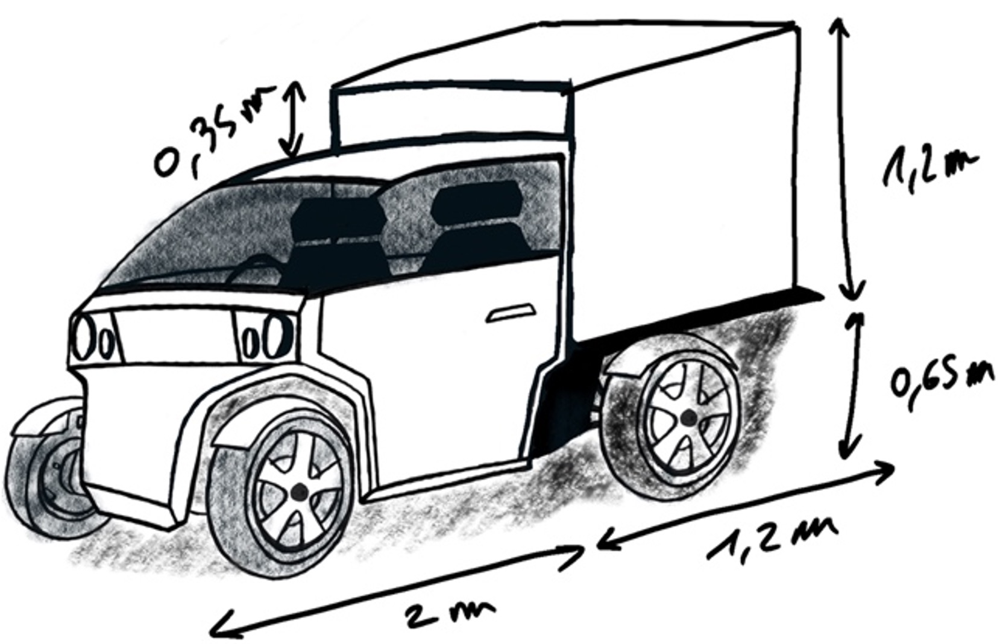
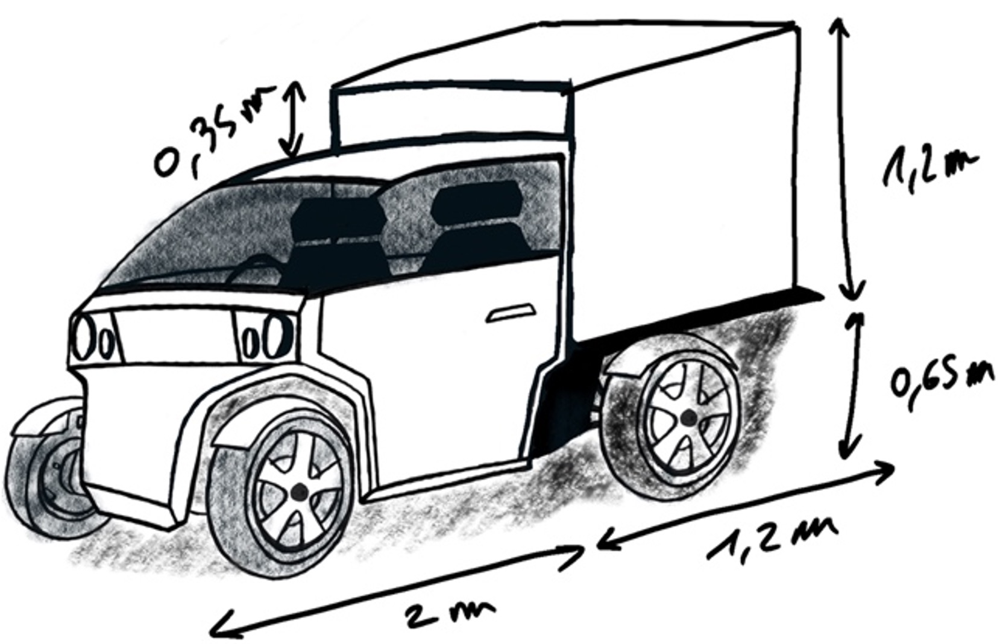

Introduction
Le projet Green Move consiste en une étude de faisabilité pour le lancement d'une gamme de quatre véhicules urbains électriques sur les marchés français, espagnol et italien. Cette étude s'est déroulée en plusieurs phases, abordant des aspects critiques du développement, de la production et de la rentabilité.
1. Positionnement sur le marché et spécifications des véhicules
Dans un premier temps, l'étude s'est concentrée sur l'analyse du marché et le positionnement des véhicules par rapport aux principaux concurrents. Quatre modèles de véhicules urbains électriques ont été définis : UNO, DUO Y, DUO S, et LIVRO.
 

2. Analyse des besoins et implantation de l'usine
La seconde partie de l'étude s'est concentrée sur les besoins en infrastructure et la localisation de l'usine de production. Le site de production a été implanté à Andancette, France, sur une superficie de 10 953 m².
3. Logistique et processus de production
Le projet a également défini les différents flux logistiques entre les fournisseurs en Asie, les entrepôts en France, Italie et Espagne, ainsi que les processus de production et d’assemblage des véhicules. Les solutions de stockage pour les produits finis ont été étudiées en détail.
4. Stratégie de fabrication et rentabilité financière
Une stratégie de fabrication ou d’achat a été développée, concluant que la production interne de tous les modèles dès la première année serait la plus rentable. L'analyse financière a révélé un investissement initial de 12,254 millions d'euros, financé par un emprunt de 26 millions d'euros sur 8 ans. La valeur actuelle nette (NPV) est estimée à 90 millions d'euros, avec un taux de rentabilité interne (IRR) de 40 % et un breakeven point atteint dès la quatrième année.
Conclusion
En conclusion, le projet Green Move est une initiative rentable sur une période de 8 ans. Les analyses de marché, de production et de finances confirment que ce projet est bien positionné pour devenir un acteur clé sur le marché des véhicules urbains électriques en France, en Espagne et en Italie.